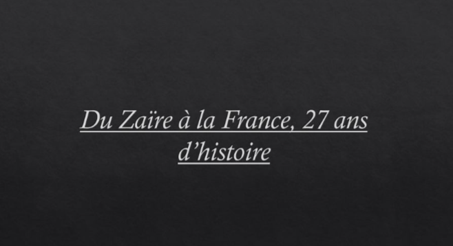

Réalisation d'une affiche promotionnelle pour un projet.
Réalisation d'une affiche promotionnelle pour un projet.Outil utilisé : Photoshop Creation of a promotional poster for a project.
Tool used: Photoshop
Je suis titulaire d'une licence en Information et Communication avec mention et je souhaite devenir journaliste web. Actuellement, je suis étudiante en Master 2 Cultures et Métiers du Web. Durant mon parcours universitaire j'ai fait du photojournalisme et de la radio. Depuis 2020, je fais des vidéos sur YouTube où je parle principalement de mode, lifestyle et je parle également de sujets d'actualité. En février 2024, j'ai créé mon magazine digital qui se nomme THE CLMB MAGAZINE. I hold a Bachelor's degree in Information and Communication with honors and I aspire to become a web journalist. I am currently studying in a Master 2 in Cultures and Web Professions. During my academic journey, I practiced photojournalism and radio. Since 2020, I have been creating YouTube videos mainly about fashion, lifestyle, and current events. In February 2024, I launched my digital magazine called THE CLMB MAGAZINE.
2019

Du Zaïre à la France, 27 ans d'histoire. Ce projet raconte l'histoire de ma grand-mère, je parle de son parcours de vie en France.
Outil utilisé : PowerPoint
From Zaire to France, 27 years of history. This project tells the story of my grandmother and her life journey in France.
Tool used: PowerPoint
2019
Réalisation d'une affiche promotionnelle pour un projet.
Outil utilisé : Photoshop
Creation of a promotional poster for a project.
Tool used: Photoshop
2021
Réalisation d'une chronique de radio sur un sujet de société.
Outil utilisé : Audacity
Production of a radio segment on a social topic.
Tool used: Audacity
2021
▶
VOIR LA PLAYLIST YOUTUBE
WATCH THE YOUTUBE PLAYLIST


Le concept "Histoire de la mode" regroupe une série de vidéos retraçant le parcours de grandes maisons de luxe mais également des marques basiques.
Outils utilisés : Canva, DaVinci Resolve, CapCut
The "History of Fashion" concept is a series of videos tracing the journey of major luxury houses as well as everyday brands.
Tools used: Canva, DaVinci Resolve, CapCut
2023
▶
VOIR LA PLAYLIST SUR YOUTUBE
WATCH THE PLAYLIST ON YOUTUBE


C'est un concept que j'ai lancé sur ma chaîne YouTube.
À travers mes productions, je donne des conseils sur le bien-être et je parle également de tendances vestimentaires.
Outils utilisés : Canva et Cap Cut, Video Leap, DaVinci
This is a concept I launched on my YouTube channel.
Through my productions, I share wellness tips and talk about fashion trends.
Tools used: Canva, CapCut, Video Leap, DaVinci
2023
JEUNE PAGES, JOURNALISME SCOLAIRE À PARIS
JEUNE PAGES, SCHOOL JOURNALISM IN PARIS

Durant 6 mois, j'ai travaillé au sein de cette association dans le cadre de mon service civique.
Nous avons écrit des articles sur l'actualité avec des élèves de primaires et des élèves de collèges.
Outils utilisés : InDesign, WordPress
For 6 months, I worked within this association as part of my civic service.
We wrote news articles with primary and middle school students.
Tools used: InDesign, WordPress
2024
THE CLMB, VOTRE MAGAZINE DIGITAL FÉMININ PRÉFÉRÉ
THE CLMB, YOUR FAVOURITE DIGITAL WOMEN'S MAGAZINE
THE CLMB est un média dédié aux jeunes filles et aux femmes, dont la mission est de les valoriser et de les encourager au quotidien à travers la mode, des témoignages inspirants et le lifestyle.
Outils utilisés : WordPress, Canva, YouTube, CapCut, DaVinci Resolve
THE CLMB is a media dedicated to young girls and women, with the mission to empower and encourage them daily through fashion, inspiring stories and lifestyle.
Tools used: WordPress, Canva, YouTube, CapCut, DaVinci Resolve
2024
RÉALISATIONS PHOTOGRAPHIQUES PHOTOGRAPHIC WORK
Grâce à mon magazine, j'ai commencé à prendre des photos qui ont un lien avec la mode.
Outils utilisés : VSCO, Paramètres de l'iPhone, Lightroom
Thanks to my magazine, I started taking fashion-related photos.
Tools used: VSCO, iPhone settings, Lightroom


2024
MON LOGO WINDMAP
MY WINDMAP LOGO
Réalisation d'un logotype en lien avec la météo.
Outil utilisé : Illustrator
Creation of a logotype related to weather.
Tool used: Illustrator


2025
LA DICTATURE BRÉSILIENNE 🇧🇷
THE BRAZILIAN DICTATORSHIP 🇧🇷
Réalisation d'un projet web et d'une vidéo en lien avec l'année 1968. Creation of a web project and a video related to the year 1968.

Outil utilisé : WordPress, DaVinci Resolve Tools used: WordPress, DaVinci Resolve